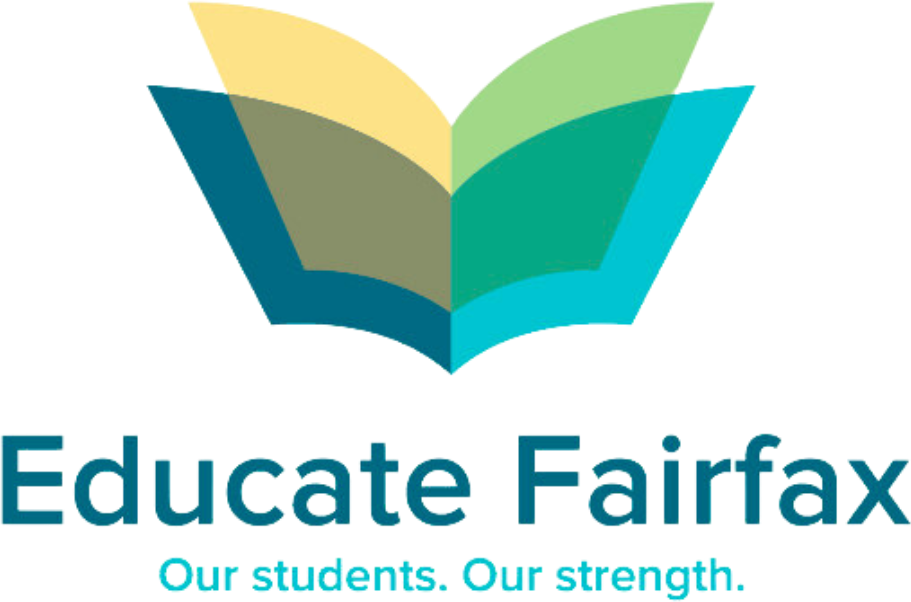
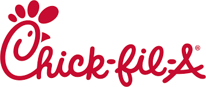

The everyday basics
Pencils, folders, glue sticks, crayons, markers. Nothing fancy, just the stuff a classroom actually burns through every week.
Student-led Fairfax County, Virginia
Generation Supply is a student-led nonprofit in Fairfax County. We collect school supplies from families, teachers, and local businesses, then hand-deliver them to classrooms where kids are going without.
Started by a freshman with a cardboard box. Now supplying three schools and counting.

Our mission
A pencil seems like nothing until a student doesn't have one. Plenty of families in our county can't restock a backpack every few months, and teachers end up covering the difference out of pocket. We think neighbors can handle this one.
Pencils, folders, glue sticks, crayons, markers. Nothing fancy, just the stuff a classroom actually burns through every week.
Everything we hand out was donated by someone nearby. A teacher cleaning out a closet, a family grabbing extras at the store, a business that wanted in.
Back-to-school drives are great, but supplies run out by October. Our boxes stay up all year, so classrooms aren't waiting on next August.
How it works
Nothing complicated. We collect what people give, count it carefully, and drive it to the schools that need it.
We set up a drop-off box at a partner school, and families and teachers toss in extras whenever they can.
Boxes are live at Greenbriar East (since April 2026) and Navy Elementary (since June 2026).
Every week we sort what came in and count it by hand, down to the last pencil. That's how we know what we have and who needs it.
Every item is sorted, counted, and logged by hand before it goes anywhere.
Then we bring it straight to classrooms at the schools where the most kids are going without.
First delivery: Brookfield Elementary, June 11, 2026. Also supplying Greenbriar East.
Our impact so far
We only started in April 2026. Everything below came from our neighbors in a few months.
Supplies are reaching students at schools where they make the biggest difference:
Stories from the community
Our first drive started at Greenbriar East in April 2026 with a box by the front office, a flyer in every teacher's mailbox, and a spot in the school newsletter. Five weeks later, the community had donated $808.88 worth of supplies.


A big day for us
Cesar loaded up the first batch of donated supplies from the Greenbriar East and Navy hubs and brought it to Brookfield Elementary himself. Months of collecting and counting, finally in the hands of the students it was meant for.
Brookfield is now our first verified distribution hub, and supplies from both collection boxes will keep flowing there all year.
“Former GBE student and current Fairfax High freshman Cesar Carlos has launched a wonderful new organization called Generation Supply to help provide students with school supplies. We are excited to support his mission by hosting a donation box right here in our school lobby.”
Programs & initiatives
A stocked pencil box helps, but it doesn't close a learning gap on its own. Here's what we're building next.
Running now
The core of what we do: collection boxes at partner schools that keep classrooms stocked all year long.
Launching August 2026
Our first student-run club is confirmed at Fairfax High School for the 2026–27 school year, and we're writing the playbook so other high schools can copy it.
In development
Free, student-led tutoring for the kids we already supply, because a glue stick can't teach fractions.
In development
One-on-one help for families navigating the school system, from picking courses to speaking up for their kids, so every student has a champion in their corner.
Our growing network
Every school we add means more supplies coming in, or more kids getting them. Here's the map so far.
Our pilot school, and proof the whole thing works. The community donated $808.88 of supplies in the first five weeks. The box is still up, and it keeps filling.
Our second box, launched two months after the first. More collection points means a steadier stream of supplies coming in every week.
A Title I school and our highest-need partner. We made our first delivery on June 11, 2026, and Brookfield is now our first verified distribution hub.
Your school could be stop number four. Talk to us.
The team
No office, no staff. Just five students who kept seeing classmates go without and decided to do something about it.


With support from

Educate Fairfax — Fairfax County's leading education nonprofit, amplifying our regional reach.
Chick-fil-A Fair Lakes — Spirit Night on September 17, 2026, directly funding our supply drives. Housing Up — A DC nonprofit housing and supporting families, connecting us to students who need supplies most.
Housing Up — A DC nonprofit housing and supporting families, connecting us to students who need supplies most.
 DC Coalition Against Domestic Violence — Helping us get supplies to children in families rebuilding after crisis.
DC Coalition Against Domestic Violence — Helping us get supplies to children in families rebuilding after crisis.
 Apple Federal Credit Union — A local credit union backing our drives across Fairfax County.
Apple Federal Credit Union — A local credit union backing our drives across Fairfax County.
 Fairfax County Times — “Helping kids succeed” → their story on Generation Supply.
Fairfax County Times — “Helping kids succeed” → their story on Generation Supply.
Want to see your business here? Become a partner →
Gallery & events
A look at what's happened so far — and what's coming up next.
Upcoming
A portion of sales directly funds our supply drives — come eat with us.
Follow our story
Drop days, partner shout-outs, and whatever else we're up to that week. It all goes on Instagram first.
Get involved
Got a drawer of extra supplies? A free Saturday? A business that wants to help? Any of those can put a kid at their desk ready to learn.
Drop extras in one of our collection boxes, or run your own mini-drive at school or work. We'll help you set it up.
Start donatingHelp us sort, count, and deliver. It's hands-on, it's local, and it works around your schedule.
Join the teamSchools and businesses can host a box, sponsor a drive, or throw a spirit night like Chick-fil-A did.
Become a partnerFollow us, share a post, tell a teacher. Half our donations happen because somebody mentioned us.
@generationsupplyContact & support
Whether you're a parent, teacher, school admin, or business, we'd love to hear from you. We read everything.